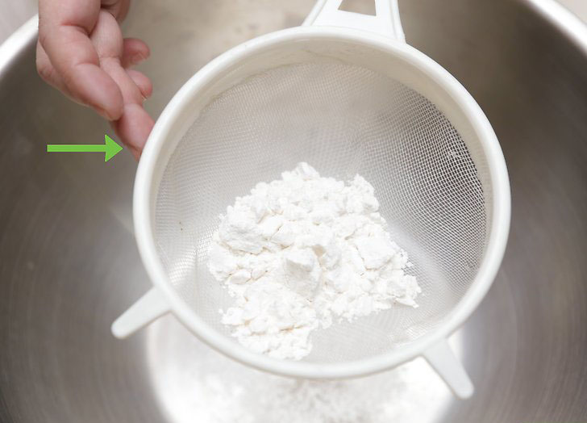
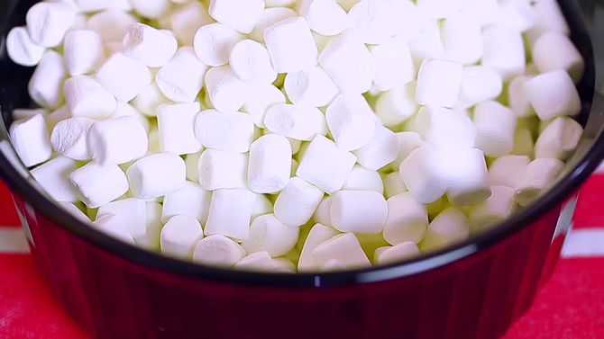
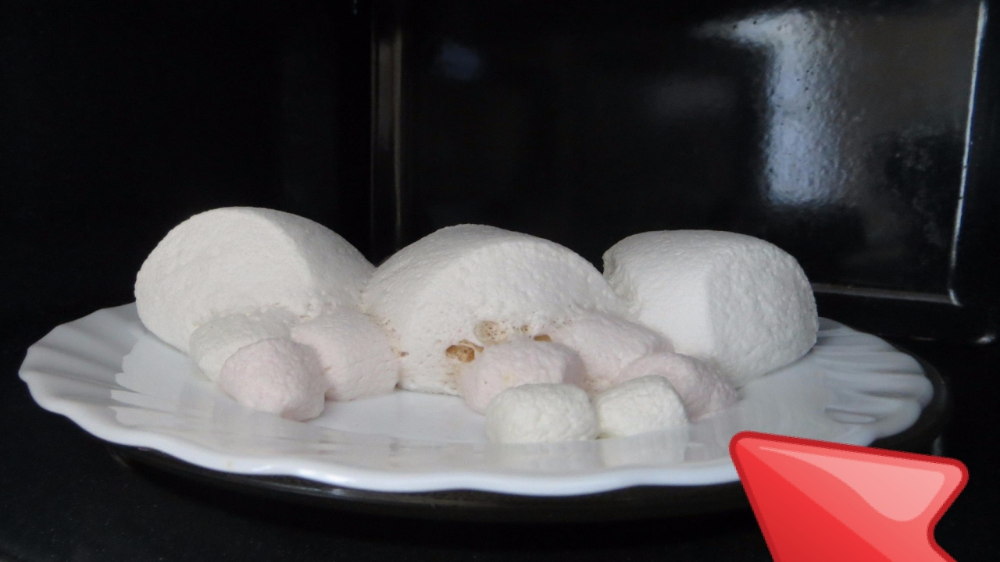
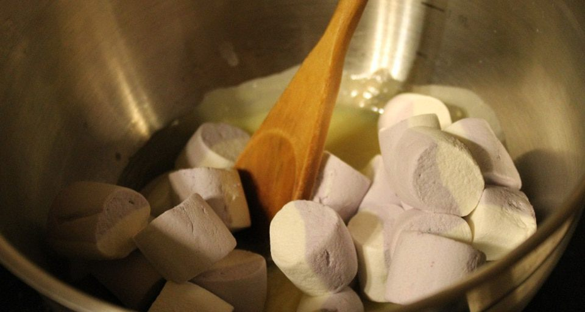
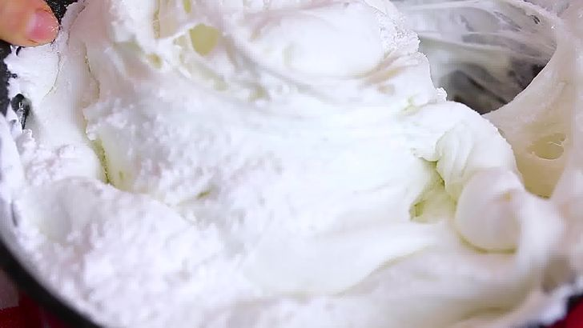
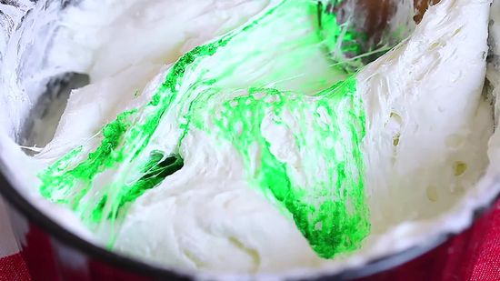
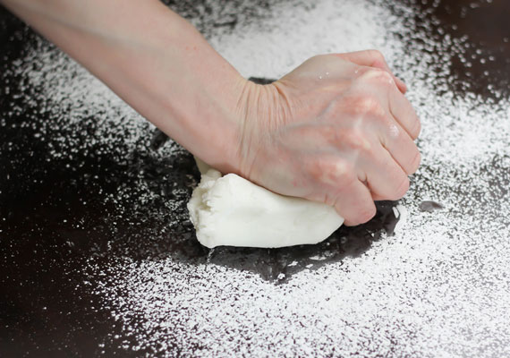
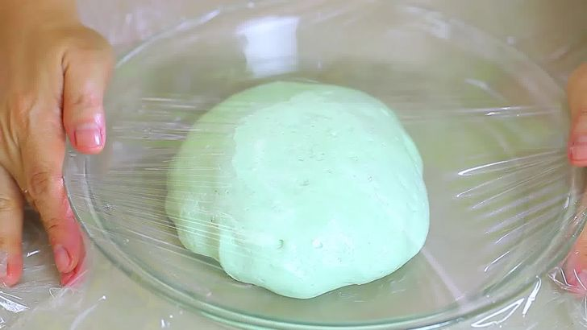

Багато ласунів хочуть дізнатися найпростіший і найзрозуміліший рецепт мастики з маршмеллоу. Їм ми і поділимося в цій статті. Ласуни відзначають, що цей кондитерський виріб є не таким солодким, як цукрова паста, виготовлена з інших компонентів.
Цікаво!
Із marshmallow можна легко виліпити потрібні фігурки та деталі. Такий матеріал для прикрашання відмінно сохне, не ламається при маніпуляціях з декором і прекрасно тримає форму.
Необхідні інгредієнти та обладнання
Як приготувати мастику з маршмеллоу? Для цього вам знадобляться наступні інгредієнти:
- 1 упаковка ніжних повітряних зефіринок (найчастіше 90 грам);
- 1 склянка цукрової пудри;
- ½ склянки картопляного або кукурудзяного крохмалю;
- 1 ст. ложка молока або лимонного соку;
- 1 ч.л. вершкового масла;
- за бажанням харчовий барвник (сухий або гелевий).
Також для приготування будуть потрібні:
- сито для просіювання сипучих компонентів;
- глибокий посуд;
- лопатка або ложка для розмішування;
- обробна дошка для розкочування;
- харчова плівка.
Корисно знати!
Рецепт мастики з маршмеллоу для торта – найпростіший для кондитерів-початківців. У цій справі форма жувального суфле абсолютно неважлива: барила, косички, пружинки… На смак цей параметр ніяк не вплине.
Рецепт мастики з маршмеллоу: просіваємо, розтоплюємо, вимішуємо…
Мастика з маршмеллоу своїми руками готується за 3 кроки. На фото все буде наочно видно.
Етап 1.

Просіювання.
Щоб готовий кондитерській виріб не порвався, слід відсіяти за допомогою сита або органзи всі великі крупинки з сипучих компонентів.
Етап 2.

Розтоплюємо зефір. Це можна зробити за допомогою мікрохвильової печі або водяної бані. Цукерки повинні збільшитися в обсязі майже в два рази.
Варіант 1. Мікрохвильова піч.

Викладіть суфле і 1 чайну ложку вершкового масла в ємність для розігріву, виставте таймер на 40 секунд (в залежності від моделі може знадобитися більше).
Варіант 2. Водяна баня.

Якщо суфле великого розміру, наріжте його на невеликі шматочки, разом з 1 чайною ложкою вершкового масла покладіть в миску, яку можна зручно встановити на каструлю з киплячою водою. Топіть зефірну масу близько 15 хвилин і безперервно її помішуйте. Коли суфле повністю розтане, зніміть його з вогню.
Важливо!
Уважно стежте за консистенцією цукерок: якщо їх перетопити, утворяться грудочки, і в подальшому суміш стане непридатною для виготовлення якісних фігурок.
Етап 3.

Додайте до розтопленої рідині столову ложку молока або ж лимонного соку. Ретельно перемішайте. За бажанням використайте харчові барвники.

Акуратно введіть в масу просіяний крохмаль і цукровий пісок (додавайте по черзі), поки не досягнете пластичності. Перемішайте лопаткою, після охолодження можна приступити до вимішування руками.
Мастика з маршмеллоу з крохмалем готова.
Додамо фарб

Для насиченого фарбування мастики варто використовувати біле суфле. Але найчастіше в магазинах продаються двоколірні цукерки. Тому перед приготуванням маси бажано розділити їх на порції. Відокремте білу частину для подальшого фарбування, а рожеві, блакитні, шоколадні, зелені складові солодощів використовуйте окремо (вони дають на виході ніжні пастельні відтінки). Барвники найкраще додавати в підтале і набрякле суфле, ретельно перемішуючи.
Густі гелеві речовини допоможуть легко домогтися бажаного результату, але якщо ваш вибір припав на сухі, попередньо розбавте їх рідиною (водою або горілкою). Також можна приготувати натуральні барвники:
- використати ягідні соки – вони дадуть насичені червоні, червоні кольори;
- какао для коричневого кольору;
- шпинат (зелений відтінок);
- активоване вугілля для чорної мастики.
Вимішуємо ще трохи

Коли густу масу стане важко розмішувати ложкою в мисці, викладіть її на обробну дошку, попередньо посипану цукровим піском. Для додаткової зручності досвідчені кондитери радять обернути дошку харчовою плівкою.
Якщо мастика нагадує туге, дубове тісто, спробуйте відірвати від неї невеликий шматочок, скачати його в кульку і зліпити нехитру фігурку. У разі повернення деталі до колишньої форми кондитерський виріб вважається неготовим (подальше ліплення буде неакуратним). Щоб виправити ситуацію, варто знову розтопити суміш і підмішати до неї пудру.
Мастика буде готова, коли маса перестане дуже сильно липнути до рук, а фігурка почне тримати форму.
Зберігання мастики

Ми розглянули покроковий рецепт, як приготувати мастику з зефіру, але не останнє місце в подальшому її використанні займає правильне зберігання.
Невикористану мастику слід покласти в холодильник, попередньо обернувши її харчовою плівкою і фольгою. Потрібно стежити, щоб на приготований виріб не потрапляло повітря, через якого він втратить пластичність і швидко засохне.
Середній термін – 1,5 місяця (в деяких випадках – до 3 місяців). У морозильній камері маса може пролежати 6 місяців. Для термінового розморожування можна скористатися мікрохвильовою піччю.
Готові фігурки зберігайте в щільно закритій коробці кілька місяців.